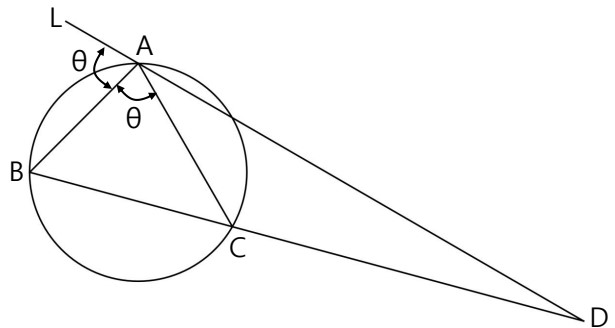

문제 1
<제시문 1> 등속도로 운동하는 모든 관찰자가 관측하는 빛의 속력은 동일하다.
<제시문 2> 등속도로 운동하는 모든 관찰자가 관측하는 자연현상에 대한 물리법칙은 동일하다.
[문제] 그림 (가)와 같이 수평방향 왼쪽에서 오른쪽으로 빠르게 등속도 운동하는 기차의 가운데에 관찰자 A가 탑승하고 있다. 또 다른 관찰자 B는 기차의 외부에 서 있다. 그림 (나)와 같이 A와 B의 수평선 상 위치가 같아지는 순간, B는 기차의 양 끝에 부착된 신호등 L과 신호등 R이 동시에 커지는 것을 관측하였다. 아래의 <보기>에서 틀린 것을 모두 고르고 틀린 이유를 각각 설명하시오.

<보기>
ㄱ. 기차가 오른쪽으로 빠르게 이동하고 있으므로 A는 R에서 나온 빛의 속력이 L에서 나온 빛의 속력보다 빠르다고 판단한다.
ㄴ. 등속도로 움직이는 모든 관찰자에게 관측된 빛의 속력은 동일하므로 A는 두 신호등이 동시에 켜진 것을 관측한다.
ㄷ. R에서 나온 빛이 A에 먼저 도달하여 A는 R의 신호가 먼저 켜졌다고 판단한다.